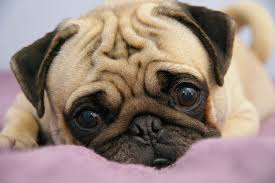
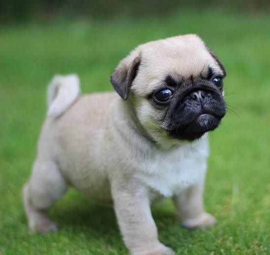

Why should you get a pug? Well for starters, they are fun to play with! Their faces are full of skin which are fun to squeeze. Playful, clever, stubborn are just some of the qualities a pug possesses. They are affectionate and loyal making them great companions. Addionally, they make decent watchdogs because their barking frequency is not as severe as other noisy dogs. Overall, they are designed to chill with their owner as much as possible which is one of the reasons I love the pug.
A Pug is a dog who:
- Is small but sturdy and blocky.
- Has a round wrinkly face with big black eyes.
- Has a easy to groom soft coat.
- Is polite with all living creatures.
- Doesn't need much exercise (likes to chill).
- Eats food indiscriminately.

Pugs love to chill.

Tiny doggo.